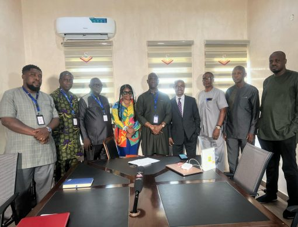

Welcome to Media Education Development Initiatives
Empowering communities through media literacy, responsible journalism, and policy advocacy to combat disinformation and promote informed societies.
Get InvolvedWho We Are
MEDI is dedicated to promoting media literacy, supporting journalists, and advocating policies that foster responsible communication.
Learn More
Our Impact Areas
At MEDIA, our work spans critical areas in media education, journalism development, and policy advocacy. We empower individuals and organizations through:Media Literacy Education
Training students, educators, and citizens in digital literacy and misinformation detection.
Journalism Development
Providing workshops, grants, and fellowships for ethical investigative reporting.
Policy & Advocacy
Shaping laws and regulations that protect media freedom and journalistic integrity.
Integrity
Promoting truth and transparency in journalism.
Education
Empowering individuals with media literacy skills.
Collaboration
Building cross-sector partnerships for greater impact.
Freedom of Expression
Defending press freedom worldwide.
Why Choose MEDIA?
Trust is built on impact. Media Education Development Initiative Africa (MEDIA) is committed to fostering media literacy, supporting journalism education, and advocating for policies that sustain a free and responsible press. Through research, training, and collaboration, MEDIA empowers individuals and organizations to navigate the evolving media landscape with confidence.

Let Us Lead the Way
From developing media literacy programs to supporting local journalism, MEDIA provides expert solutions tailored to strengthen communication and media education worldwide. Partner with us to drive meaningful change. Join Us Today!Be part of the change
Empower media literacy. Defend press freedom. Support ethical journalism — as a volunteer, donor, or advocate.